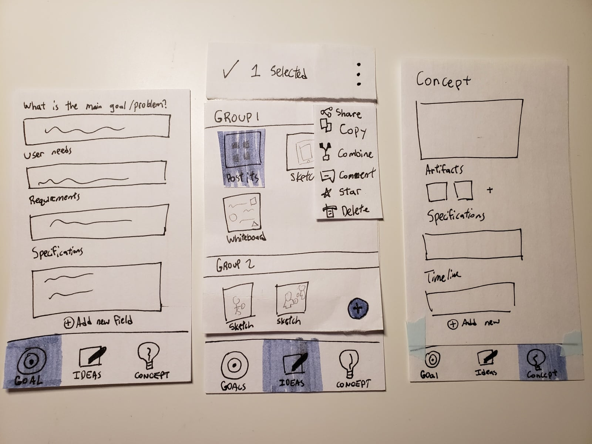
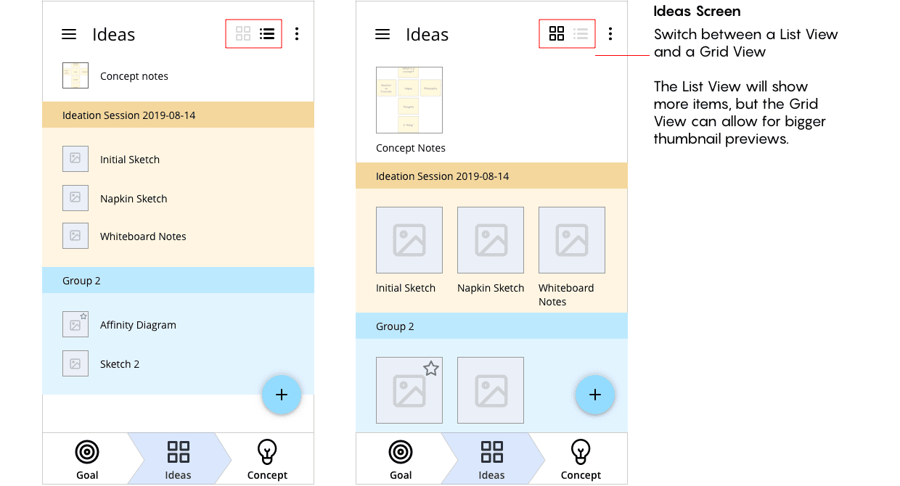
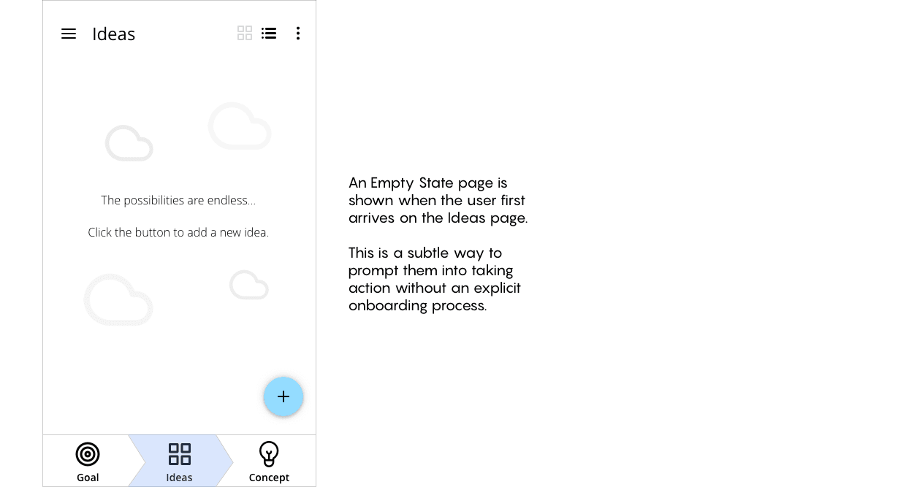
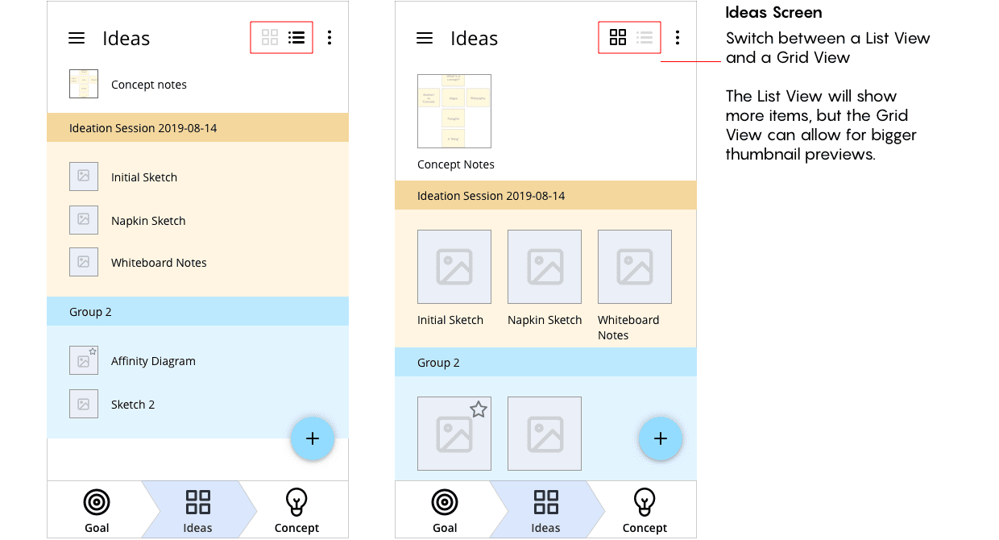
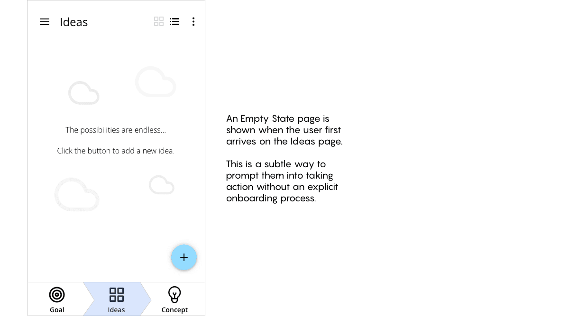

Organizing ideas into concepts
UX Design
about
CREAT is an ideation management tool to help designers turn ideas into concepts. Its main purpose is to help organize physical artifacts created during the ideation phase of the design process by digitization.
role
UX Designer
Interaction Designer
(Solo project)
timeline
4 Week Design Sprint
(August 2019)
methods
Affinity Diagrams
Paper Prototypes
Wireframes
User Testing
Interactive Prototypes
PROBLEM
How can we organize the physical ideation process?
Design processes usually involve an ideation phase where designers explore a diverse range of ideas before converging into a single concept to further develop. Physical ideation activities such as sketching and sticky notes are great for rapidly exploring ideas during this time. However, the design artifacts generated from these activities are difficult to document and organize, especially when teams are remotely separated.
SOLUTION
CREAT – an ideation management tool
CREAT is a tool to help manage and digitize the various artifacts generated in the ideation process. By digitizing ideas, they can be shared across the team to cultivate new ideas instead of staying hidden in one person’s notebook.
Organizing artifacts
Artifacts can be organized by sessions or in custom groups to suit the team's working style. Both grid and list views are available.
Digitization
Digitizing physical artifacts is as easy as taking a photo. The image is then converted with OCR to a digital format that can be manipulated. The original analog version can also be toggled back in case any details go missing.

Documentation
Annotations and comments can also be added to help capture the thinking process. This documentation helps ideas and artifacts live on their own without requiring a designer to walk through their thinking process.
PROCESS
Concept around concepts
Exploring the problem space
This project started as a class project where I was given the prompt “Concepts” as a starting point to work from. This led to an incredibly meta exploration of generating ideas and concepts around concepts.
Through mind mapping and affinity diagram exercises, I explored various directions I could take the project in such as teaching concepts, concept generation, and challenging concepts.
After some discussions with classmates, I decided to explore the branch of Idea vs Concept and what that means. Depending on who you ask, you’ll get different answers with varying semantics, but the definition I settled on was an Idea being loose and vague whereas a Concept is defined with set constraints and structures.
In fact, the activity of going from an Idea to a Concept is the design process we are very familiar with! Seeing how my classmates work through this very process inspired me to explore how a tool can help designers in this phase.
In order to keep the project scope contained for our short timeline, I decided to concentrate on the areas of Remote Collaboration and Digitization as these are relevant topics that I am interested in.
Research Insights
Remote work is becoming increasingly popular these days as we redefine what work means across space and time zones. This introduces new challenges to working in a team, especially for activities that used to be co-located such as Affinity Diagramming and Whiteboard Sketching. How do these common ideation activities translate to remote teams?
In order to find out, I reached out to a Product Designer working in a remote company. This helped me discover 3 insights:
- Remote designers still use sketches to quickly share their ideas with each other
- Online collaboration tools are helpful when they need to brainstorm together
- Documenting thinking processes is key to capturing and synthesizing ideas
Ideation
With this new insight in mind, I started sketching ideas and features for an app that can be helpful for a designer in this situation.
The general idea was an app to help remote collaborators work together through a shared digital space. It would combine both physical and digital artifacts generated throughout the design process to form a concept.
At one point, I realized I was teetering very closely towards existing collaborative whiteboarding tools such as Miro or Mural. It didn’t make sense to create a similar tool, especially for a mobile interface which is not well suited for this type of productive work.
I decided to pivot slightly to focus less on real-time remote collaboration and more on the idea management process as I believe there is lots of potential in organizing and documenting ideas across the team even asynchronously.
Paper Prototyping
As this app tries to push the benefits of working with tangible processes, it would be quite awkward if I didn’t create some paper prototypes to explore the interaction flows.
My first prototype was quickly put together but testing it with users helped me get a sense of how the flow felt and how to structure the navigation between screens.
The second iteration was more detailed and I explored how the interactions between screens felt. I also played with different menu bar placements. The feedback I got from this round was more concrete and actionable. For example, one comment I received pointed out potential navigation issues and also suggested features like PDF Exporting.
The final paper prototype I did focused on Information Architecture and incorporated common UI patterns like a bottom Tab Navigation. At this point I had a pretty good grasp on the direction the UI was heading and it was time to start wireframing with digital tools.
Wireframing
My wireframes started at a medium fidelity as my paper prototypes were a good base to work off from. I concentrated on forming good UI flows and utilizing mobile UI patterns such as modal views and Tab Navigation.
Testing and Refinements
The wireframes were put together into an Invision Prototype to properly test the interaction flow with. Testing at this level of fidelity provided detailed feedback that I used to iterate my design with. Even though I only created certain flows, adding functional elements like a working hamburger menu made the app feel more reals when put in the user’s hand.
Some simple refinements I did that made a big difference:
Final Design
Due to the short timeframe of the project, I focused more on the interaction design, so there was less priority placed on polishing the UI and visual branding. My final prototype is decently high fidelity, but refining the visual design as future work will give the app a much more cohesive feel.
 



OUTCOMES
Just a concept after all
Future Work
The end result of this project is just a very early exploration into a tool that can aid designers during the design process. The goal was to create an app to help organize the ideation process. The logical next step is to test whether CREAT can actually achieve that. This will involve setting up a situation where users are actively using this app as a part of the ideation process to test the viability of these ideas in practice.
From early on, CREAT was intended to be a tool that teams can integrate into their collaborative workflow. It was not meant to be a single replacement for every feature a team needs to work together. In our current workflows, we did not yet explore deeply into how teams would collaborate using this tool and is the next area to explore for sure. Seeing how CREAT can integrate with other tools will be key to creating a useful collaborative environment.
Personal Lessons
While this was a solo project, there were many opportunities to get feedback through critique sessions with my classmates. Being able to loop the feedback directly into our next iterations helped us develop our designs in ways we wouldn’t have been able to otherwise.
My initial concept was so vague but I ended up with an app concept that I am quite happy with. If I were to go back, I could have explored it in many of the other directions but I’m sure the design process I followed will hold true no matter what I design in the future.
next project